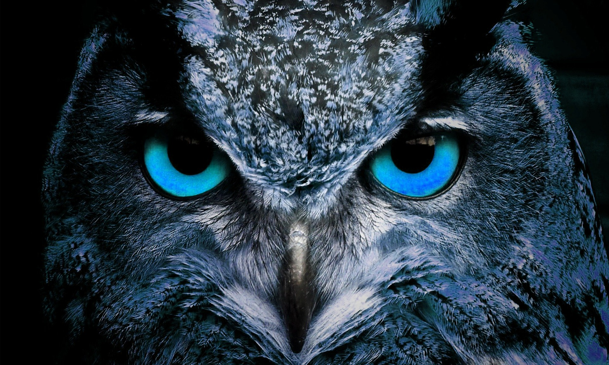

Owls
To Night We Hunt
Anatomy
Owls possess large, forward-facing eyes and ear-holes, a hawk-like beak, a flat face, and usually a conspicuous circle of feathers
Hunting
All owls are carnivorous birds of prey and live on diets of insects, small rodents and lagomorphs. Some owls are also specifically adapted to hunt fish.